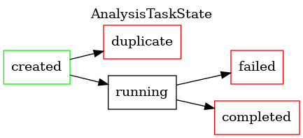
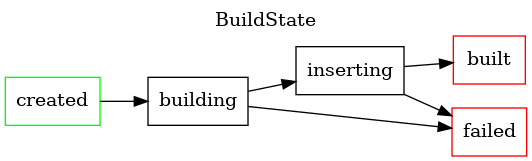
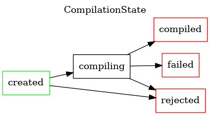
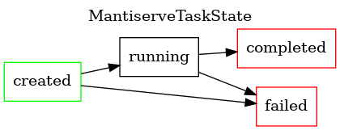

Hacking on MATE¶
Important
This page is intended for the developers of MATE only – it is not relevant for users.
Overview¶
Hello and welcome! 👋
If you are new to MATE, please check out:
Then continuing reading this page to understand what Documentation is available, get a tour of the codebase, and learn about our build workflow and engineering practices.
To get up to speed on what is represented in the Code Property Graph (CPG) take a look at the CPG schema, which describes the types of Nodes and Edges in the CPG, as well as what properties they contain.
To get write queries and play with the query interface, the best place to start is with MATE Python Notebooks. You can search and browse the autogenerated API documentation.
A tour of the codebase¶
Below is some context on what some of the files and directories contain, along with what you might want to know about them.
Dockerfile&requirements.txt: These files encode the dependencies necessary to build and to runmate. MATE is released in themate-distdocker image, which contains only the minimal number of dependencies to runmate, whilemate-devcontains all the dependencies needed to for developingmate. Our CI pipeline builds both of these images each time it runs (such as when you push a commit to an open merge request), and pushes the images tagged with the branch name to artifactory. You can download each of these images with the commanddocker pull artifactory.galois.com:5004/mate-dev:<branch-name>. Any time the content of these files changes you will need to pull the corresponding image from Artifactory or rebuild locally. You can rebuild locally by runningdocker build --target dist --tag <branch>:<version> .in the root directory (the tag is arbitrary, the format suggested here is based on your currentgitbranch and some version number).shake/exe/Mate.hs: We use the Shake build system to build MATE; this is the file where the build system is defined. You can build MATE from inside themate-devcontainer by running./shake.sh bdist, which builds the binary distribution of MATE. This will create or update files in the.outoutput directory. If you want to change, add or see the details of any flags to the build systemMate.hsis the file to check out..gitlab-ci.yml: This file defines the commands executed by each of the CI pipeline stages.frontend: Files related to the MATE REST API, task substrate, integrations with other CHESS TAs, and the legacymatecommand line interface (CLI). For more CLI documentation check out the MATE CLI overview as well as the full (autogenerated) docs of all the command line flags. Themateexecutable lives atfrontend/mate/bin/mate. When you buildmateby running./shake.sh bdistin themate-devimage, the frontend/mate directory gets copied to.out/bdist/local/lib/python3.8/site-packages/mate.frontend/mate-common: This is an independent package for MATE components that are shared by both the MATE server, consumers of thematePython package, and the REST client.frontend/mate-rest-client: This is an independent Python binding for MATE’s REST API.frontend/mate/mate/cpg: This is where the query interface implementation lives. This is where Python classes corresponding to CPG elements (such as Nodes) are defined, along with the specification of their attributes. There are many different types of nodes in a hierarchical relationship, where child type nodes inherit the attributes of the parent nodes. We use SQLAlchemy to implement the queries.frontend/mate/mate/poi: This is the home of the POI (Point Of Interest) framework code as well as all automated POI analyses. For more info see the POI docs.frontend/mate/mate/context/cli.py: This file defines all the command line options and uses theargparselibrary to construct a context object. This context object shows up throughout the legacy CLI code infrontend/mate, usually bound to a variable namedctxt.test/postgres: This directory contains unit tests for features related to querying the CPG using the Python query interface. See Writing and running MATE’s tests for more details on running the various test suites as well as writing new unit tests.
llvm: This directory contains our “middle-end” LLVM passes which are run withopt.llvm/MATE/ASTGraphWriter.cppis the pass which traverses the program under analysis and writes out the nodes and edges of our CPG into a JSONL file. These JSONL files are then post-processed to create the database which the query interface queries against. The pointer analysis is also implemented as a middle-end pass and passes data into theASTGraphWriter. See the MATE Tooling Architecture documentation for more details.submodules: MATE contains a number of other projects as submodules, which reside in thesubmodulesdirectory. Whenever the code changes to rely on an updated version of a submodule, you’ll need to get a later version by runninggit submodule update --init --recursive.ui-client: This directory contains the MATE UI client. See the Hacking on the MATE UI section below.doc: This directory contains our documentation (in addition to the documentation contained in docstrings!) For more info, see the Documentation section below.
Building and Running¶
Below is an outline of two different environments for building & executing MATE, and an overview of different parts of the analysis and implementation.
Building with Docker¶
Quickstart¶
Permissions¶
In order to build MATE, you need to make sure you have permissions for the following:
Artifactory
The MATE repos
Here is a quickstart of the commands if copying and pasting to do a new build or starting up on a new machine. Each command is explained in more detail after this section.
docker login artifactory.galois.com:5004
docker pull artifactory.galois.com:5004/mate-dev:master
docker tag artifactory.galois.com:5004/mate-dev:master mate-dev
git clone --recurse-submodules git@gitlab-ext.galois.com:mate/MATE.git
cd MATE
docker run --rm -v $(pwd):/mate -it mate-dev ./shake.sh -j bdist
docker build --target dist -t mate-dist .
Explanation¶
First, authenticate with Artifactory:
docker login artifactory.galois.com:5004
Pull the latest Docker image from the Artifactory repository.
The development image is mate-dev, and the release image is
mate-dist. For this example, we’ll be using mate-dev.
docker pull artifactory.galois.com:5004/mate-dev:master
Re-tag the mate-dev image without the artifactory.falois.com:5004/
prefix, for convenience.
docker tag artifactory.galois.com:5004/mate-dev:master mate-dev
Clone the MATE repository, including its submodules.
git clone --recurse-submodules git@gitlab-ext.galois.com:mate/MATE.git
Enter the MATE source tree. We use the source tree as a build context, so we need to be in it for subsequent steps.
cd MATE
Run the bdist target, which actually builds MATE’s core runtime components.
Important
The bdist build includes a large C++ build that requires at least
8GB of RAM. You may encounter OOM-induced build failures if your development
machine (or Docker environment) doesn’t have sufficient memory.
Alternatively, if increasing the amount of RAM is not feasible, you
may have some luck with reducing the build’s parallelism (e.g. with -j2
instead of -j) or removing -j entirely.
Note
A “release” build of MATE can be produced by passing --release-build
to ./shake.sh. This may result in an even more memory intensive
build phase.
docker run --rm -v $(pwd):/mate -it mate-dev ./shake.sh -j bdist
Build the mate-bdist image, which embeds the MATE runtime that we
built in the previous step.
docker build --target dist -t mate-dist .
Useful options for working with Docker¶
Add
--rmto remove the container after you stop itTo run a single command inside Docker and exit, remove the
-itflag and add the command to run, i.e../shake.shto the end of thedocker runincantation.
Run the build¶
If you followed the quickstart above, you should have an initial build of MATE available.
To re-build MATE with any changes you’ve made, just re-run the bdist and
mate-dist steps:
docker run --rm -v $(pwd):/mate -it mate-dev ./shake.sh -j bdist
docker build --target dist -t mate-dist .
For guidance on how to analyze a program with MATE, check out the tutorial.
Hacking on the MATE UI¶
MATE’s current UI is a web application, based on React and written in TypeScript.
It is decoupled from the rest of the MATE codebase, using only the REST API exposed by the MATE server.
For local development, the docker-compose.ui.dev.yml compose file provides
hot reloading of the UI. You can run it in conjunction with the main
docker-compose.yml file to bring up the entire MATE stack at once:
docker-compose -f docker-compose.yml -f docker-compose.ui.dev.yml up
Alternatively, if you already have the core MATE services running, you can
run just the ui service:
docker-compose -f docker-compose.yml -f docker-compose.ui.dev.yml up ui
Development practices¶
This section collects the practices that the whole MATE team has agreed to uphold. These practices continue to develop as we work together. The two major goals of these practices are:
To ease the maintenance of MATE in the long term
To reduce the potential for friction and inefficiency as a result of mismatched expectations
To attend to (2), we need to agree on how consistently we uphold each of these practices. In the following sections, the word consistently will prefix practices that we do almost always, and aspirationally will be used for ones that aren’t necessarily expected, but are nice to do. Some of these are invariably enforced, meaning that compliance is guaranteed by some automated mechanism (usually a Gitlab setting).
Documenting development practices¶
Consistently: documenting our development practices in writing ensures we’re all on the same page. Changes to the practices should be reflected in this document, and should be approved by the whole team.
Using Gitlab¶
MRs¶
Invariably: Code is added to the master branch exclusively through merge requests (MRs). In practice this means developing on a branch off of master and opening a MR based on that branch.
Aspirationally: MRs link to relevant issues, especially ones that should be considered “done” once the MR is merged. This helps us track exactly when and how issues got fixed.
Assigning reviewers¶
Consistently: Every MR is assigned to one or more collaborators
for review. The assignee tends to be, but doesn’t have to
be, someone familiar with that part of the codebase. When assigning the
reviewers, the MR author should ping them in the ~review-requests channel
on Mattermost, and should do so every time the MR is ready for another round
of reviews. One approval is required before merging. The assignee should
review within a business day, or reassign the MR to someone else. Unless the
author needs specific feedback from the assignee(s), it’s OK to merge if a
collaborator other than the assignee(s) reviews the MR.
Squashing¶
Aspirationally: To preserve a clean Git history (see also Using Git), we often squash the many commits added to a MR during the review/test cycle into one commit on the master branch. However, it is not a requirement to squash commits, and in fact it can be detrimental to a meaningful Git history to squash together unrelated changes (e.g. one commit that is purely organizational with one that changes functionality or fixes a bug). MR authors should use their best judgement, and label the MR appropriately.
Consistently: As a rule, each commit on a non-squashed MR should pass CI, i.e. each commit on the master branch should always build and pass tests.
Rebasing¶
Invariably: Every MR has to be rebased against the current master branch (Gitlab conveniently provides a button for doing this). This ensures that the MR is run with the latest tests, and that another recently merged MR didn’t subtly conflict with it. Unfortunately, it also means that all the tests need to run again, and they can take a while.
Aspirationally: After rebasing a branch, the rebaser should cancel any ongoing CI runs for that same MR. This helps reduce load on the CI runners, speeding up other builds.
Merging¶
Consistently: The author of the MR hits the merge button after it has been approved. This prevents merging in code that may be approved but that the author may wish to make more changes to before merging. Reviewers can hit the merge button for trivial changes but should generally defer to the author.
The section on MR labels describes how the author can indicate that the MR is ready to be merged.
MR Labels¶
Aspirationally: When an MR has been approved by a reviewer and is ready to
merge, the author should add the MR-ready/squash or MR-ready/no-squash
labels, indicating that the MR is ready to be merged, and that other
collaborators should rebase it and merge it if another MR is merged first.
See also the section on issue labels.
WIP MRs¶
Aspirationally: If your MR is not ready for a full review and merge, but you’d like someone to have a head start on looking at your progress, prefix the title of the MR with “WIP:”, and remove this prefix and notify the asignee (s) when it is ready for review.
Issues¶
Aspirationally: We use issues to track bugs, plan features, and as a forum for discussions. Creating issues and assigning them to yourself helps others know what you’re up to, and prevents duplication of effort.
Issue Labels¶
- Aspirationally: There are a few labels that indicate the priority of issues.
These are helpful for searching and sorting issues, especially in milestones. Collaborators should create and use additional Gitlab labels however they find helpful.
Milestones¶
Aspirationally: We assign issues and MRs to milestones to track our progress, ensure necessary functionality and fixes get merged before releases, and to align our development with the Statement of Work.
Code review¶
We have no specific practices surrounding code review (other than a review is required for each MR). See also Further reading.
Testing¶
Aspirationally: We generally expect that code added to MATE has at least one associated unit test, i.e., a test that specifically exercises the new functionality, independently from as much other code as possible. These tests run in CI on every merge request.
Using Git¶
Commit messages¶
Aspirationally: We strive for meaningful commit messages. It’s especially important to review the commit message that Gitlab will add to your MR when squashing (sometimes it makes a weird choice).
Linting and formatting¶
Invariably: All code introduced in MATE passes a suite of linters and formatters. These tools are integrated with the Shake build system, so developers can run the following:
./shake.sh lint
./shake.sh format
to lint and auto-format their code, respectively.
Automatically formatting the code has a few advantages.
It ensures consistency in style across our codebase, hopefully making the code more readable.
It saves developer time, because you need to spend less time fixing up your hastily-written scripts to look nice.
It reduces friction during code reviews, because disagreement about how code should be formatted is front-loaded in the selection and configuration of a formatting tool.
Linting shares many of the same advantages with respect to readability, but also helps us avoid common bugs, such as type errors.
Mypy¶
Aspirationally: When possible, adding Mypy-compatible type annotations makes
the code easier to refactor, communicates the author’s intentions, and catches
some type errors at lint-time (rather than at run-time). Sometimes it’s not
possible or worth the effort to add type annotations to code, due to the
limitations of Mypy’s type system (for example, in mate_query.cpg.models).
Further reading¶
Galwegians interested in learning more about internally-recommended software engineering practices should take a look at the the relevant wiki page.
In particular, engineers at Galois have identified the following pages as good resources for code reviewers.
Documentation¶
Documentation for MATE is written in ReStructured Text, and processed by the
Sphinx documentation system. Documentation source files are located within
the doc/ subdirectory of the MATE repository.
Building¶
The build-system provides a top-level target for building the documentation:
$> ./shake.sh doc
In addition to rendering the documentation, the doc target also
pre-generates the autodoc sources, including the CPG, API and CLI references.
Rendered documentation is placed in doc/_build/<format> for each of the
output formats, all of which are built each time. To view the built HTML,
simply open the root document in your browser of choice:
$> $BROWSER doc/_build/html/index.html
Alternatively, the built manual page may be viewed directly in the terminal:
$> MANPATH=doc/_build/man man mate
Writing¶
The steps to writing more documentation are simple: navigate the ToC Tree starting from doc/index.rst to the most appropriate location
for your contributions, and edit away. You may need to create new .rst
files to hold your text; make sure to insert them into the appropriate ToC
trees as you go.
Once you’ve made your edits, rebuild, and make sure your work shows up in all the relevant indices and tables.
Deployment¶
Documentation from the master branch of the MATE repository is automatically
rendered and deployed to the web by CI. Your
edits will need to be merged into master before they show up.
The JSON schemata¶
The JSON schemata in ./frontend/mate-common/mate_common/schemata describe valid contents of the
JSON blobs stored in the database. The edges.json and nodes.json files
specify each kind of node and edge in the CPG along with their required and
optional fields. This information can also be found in
frontend/mate-common/mate_common/models/cpg_types/mate.py which codifies
these structures so they can be used in the query interface.
The Wiki¶
Some information can be found on the project wiki, including design documentation for a few features:
Capitalization conventions¶
MATE is the name of our project,
mateis the name of the legacy CLI tool and the primary Python packagePython, SQLAlchemy, etc. are proper names and need capitalization
JSON, SQL, POI, etc. are abbreviations and need capitalization
Adding a new model to the CPG¶
Considerations¶
Before committing to adding a new CPG model, consider the following:
Does your feature need its own (node or edge) kind and corresponding model, or can it be attached to a pre-existing model?
If adding a new node kind, will new edge kinds be required?
Changes¶
Enumerations¶
In frontend/mate/mate/cpg/types/mate.py, update the NodeKind or EdgeKind
enum (or both, if adding both nodes and edges) to contain your new kinds.
Nodes¶
If adding a new node whose kind is Foo, you might add the following to
NodeKind:
FOO = "Foo"
Once you’ve updated the NodeKind enum, you should also:
Update the
NODE_PROVENANCEmap to reflect the MATE component responsible for the node’s contents.If appropriate, update one or more of the node sets (e.g.
CONSTANT_NODES,INSTRUCTION_NODES, etc.) that the new node belongs to. Not all nodes have a set, so this step may not be necessary.Update the
NodeJSONenum in the same file to list the new node’s expected top-level attributes. Attribute names are unique, so you shouldn’t repeat any enumeration values that happen to already exist.For example, if
Foois expected to containbarandbaz, you might add:BAR = "bar" BAZ = "baz"
Edges¶
If adding a new edge whose kind is FooToBar, you might add the following to
EdgeKind:
FOO_TO_BAR = "FooToBar"
Once you’ve updated the EdgeKind enum, you should also update one or more
of the edge sets (e.g. POINTS_TO, DATA_FLOW_FORWARD_THIN, etc.) that
the new edge belongs to. Not all edges have a set, so this step may not
be necessary.
Schemata¶
Next, you’ll need to update the JSON schemata to reflect your new node and/or edge kinds.
For new nodes, edit the frontend/mate-common/mate_common/schemata/nodes.json file.
For new edges, edit the frontend/mate-common/mate_common/schemata/edges.json.
New relationships¶
If your changes include new relationships between nodes (including new edges), then you’ll likely need to edit two files:
frontend/mate-common/mate_common/schemata/relationships.json: Describes the cardinality of eachEdgeKind, i.e.one-to-one,one-to-many, etc.frontend/mate-common/mate_common/schemata/endpoints.json: Describes the valid node-node relationships as connected by edges.
Adding the model¶
Finally, we need to add the actual model and connect it to the above enumerations.
Adding Nodes¶
For nodes, add the model to the appropriate file under
frontend/mate/mate/cpg/models/node. The appropriate model is determined by the
node’s origin: DWARF-related nodes go under dwarf.py, analysis-related
nodes go under analysis, and various program ASTs go under ast/.
For example, if Foo is a binary-level program feature, we might add the
following to frontend/mate/mate/cpg/models/node/ast/bin.py:
class Foo(NodeMixin):
_kind = NodeKind.FOO
pass
See below for examles of adding relationships via the edge_relationship API.
Our final step is to expose our model as an attribute on BaseCPG, which is
defined in frontend/mate/mate/cpg/models/core/cpg.py:
class BaseCPG:
Foo: Type[Foo]
# further down, in _attach_node_models:
self.Foo = make_node_class(self.Node, _Foo)
# even further down:
self._node_model_classes = [
self.ASMBlock,
...
self.Foo,
]
Adding Edges¶
For edges, you don’t need to modify the BaseCPG. However, if you’d like
attributes to show up on nodes based on their connecting edges, you’ll
need to describe their relationships using edge_relationship.
For example, here’s how an ASMGlobalVariable is connected to its
DWARFType:
@declared_attr
def dwarf_type(cls) -> RelationshipProperty:
return cls.edge_relationship(
EdgeKind.HAS_DWARF_TYPE, cls.cpg.DWARFType, backref="global_variables"
)
backref is the same as SQLAlchemy, meaning that this code produces two
new APIs:
global_var.dwarf_type # => DWARFType
some_type.global_variables # => [ASMGlobalVariable]
Adding a POI Query¶
Here’s a checklist of things to think about when adding a POI query:
Add a test program and accompanying test harness. Optimally, this program will have true positives, false positives (where static information is insufficient or the query could stand to be improved), true negatives, and false negatives.
Add the new query to the tests in
/home/langston/code/mate/side/tests/integration/poi/test_pois.py.Test running the POI query on some mid-size programs to ensure it’s sufficiently performant.
Consider whether there are opportunities to push work from Python into the database (which is generally way faster).
Consider the directionality of your queries - are there reasons to think that forwards or reverse queries might be more performant or precise?
Consider how your queries do or don’t make use of context-sensitivity in the CPG - context-sensitivity can help build much more precise queries!
Querying the SQL DB Directly¶
It can be instructive to directly query the SQL database that stores the MATE
CPG and other runtime state. After bringing up the MATE DB with
docker-compose, try the following to list the tables in the database
(replacing mate_db_1 with the appropriate container name):
docker exec -it mate_db_1 psql --username=mate --command='\dt'
You can then attempt the following queries, replacing nodes or edges by
some specific build’s node or edge table (which will look something like
edges_9b71d8a6f09c43989785682196f98bfd).
Listing Nodes/Edges¶
You can list all the nodes or edges in a graph by issuing direct table
scans. Use limit to only see a sample.
SELECT * FROM nodes LIMIT 20;
SELECT * FROM edges LIMIT 20;
Filtering on Node/Edge Attributes¶
To restrict your listing to specific attributes, add a where clause
and use json_extract.
SELECT
*
FROM
edges
WHERE
json_extract(attributes, '$.edge_kind') = 11
LIMIT
20;
Documentation on how to manipulate JSON can be found in the SQLite Documentation.
Statically-Sized Joins¶
To join a known number of tables, use them together in a WHERE
clause.
SELECT
json_extract(sources.attributes, '$.llvm_type') AS source_type,
json_extract(targets.attributes, '$.llvm_type') AS target_type
FROM
nodes AS sources, edges, nodes AS targets
WHERE
sources.uuid = edges.source
AND edges.target = targets.uuid
AND json_extract(sources.attributes, '$.llvm_type') = 'i32'
AND json_extract(edges.attributes, '$.edge_kind') = 11;
Path Queries¶
Path queries involve joining the edge table multiple times, with itself. This can be expensive; thankfully, we can use recursive common-table expressions (CTEs) to express this (relatively) concisely.
The following query constructs a table of all paths between any pair of vertices.
-- Definition of recursive CTE
with recursive paths(source, target, path) as (
-- Base Case
select uuid, uuid, json_array(uuid) from nodes
union
-- Recursive Case
select
paths.source,
edges.target,
-- Cycle-breaking
json_insert(
paths.path,
'$[' || json_array_length(paths.path) || ']',
edges.target
)
from paths, edges
where paths.target = edges.source
and edges.target not in (select value from json_each(paths.path))
)
-- Usage of recursive CTE
select
source,
target,
-- Prettify JSON path, not strictly necessary.
(select group_concat(value) from json_each(paths.path)) as path
from paths;
Extensions¶
There are multiple ways in which this query can be refined:
If you will be doing multiple queries over the computed paths, you should probably store them in a table.
create table paths as with recursive …;
This approach will often be better than recomputing the query with additional constraints, as below, if there are enough of them.
If you do not require paths between all pairs of vertices, you can add a
whereclause to the base case of the query to restrict the set of entry points.If you want to compute all paths not passing through a given vertex, you have several options:
Compute all paths, and filter them on the path afterwards. This will be faster if you have precomputed the paths already.
Add a
whereclause to the recursive case of the query to stop it from exploring the given vertex.
Shortcomings¶
Pretty much any kind of query you like can be expressed as a combination of an all-paths query, followed by a filtering. However, some kinds of queries won’t really scale with this approach.
For example, CFL-reachability can only really be answered by computing all paths, and piping them out to a separate program to do the CF filtering. Ideally, we would like to pre-emptively prune any path that will not be accepted by the CFL, but SQL won’t support this since it can’t maintain state very easily.
Internal state machines¶
MATE executes a variety of asynchronous tasks internally, the majority
of which are implemented in mate.tasks (i.e., under frontend/mate/mate/tasks).
Nearly all tasks are modeled as state machines, with a limited number of valid transitions between states. Each is shown below, with terminal states highlighted in red.
   {kind=link}
{kind=link}
{kind=link}
{kind=link}
CI and Git Branches¶
Background¶
MATE has a large test suite, ranging from unit tests of small pure functions to whole-system integraion tests running in Docker Compose. However, more tests running on every commit are not always better. We have to balance the trade-off between the additional assurance granted by running more tests against the time they take to run. The central concerns to take care of when considering this balance are:
Level of assurance for deliverables to the client
Depth of features in deliverables to the client
Developer productivity and happiness
(None of these concerns correspond directly to more/slower tests or fewer/faster tests.)
Implementation¶
Development of MATE happens in merge requests against the master branch,
which has a suite of tests that run on every commit. MATE has enough
long-running tests that it’s not feasible to run all of them against every
commit before merging to master. Therefore, master is periodically
merged into the stable branch, and the following script decides when to run
a longer, more complete suite of tests:
#!/bin/sh
# Test script to see if we're in a CI pipeline that should run integration
# tests, optimize heavily, etc.
#
# Specifically, will exit 0 (true) if:
#
# 1. this is a MR into stable,
# 2. this is a commit on stable, or
# 3. this is a pipeline inside a schedule (indicating a once-a-day pipeline on
# master).
#
# This script should be kept in sync with the "rules:" clause of the
# ".on-stable:" configuration in .gitlab-ci.yml.
set -x
if [ "${CI_MERGE_REQUEST_TARGET_BRANCH_NAME:-fake}" = "stable" ] \
|| [ "${CI_COMMIT_BRANCH:-fake}" = "stable" ] \
|| [ -n "${SCHEDULE}" ]; then
exit 0
fi
exit 1
Specifically, when the above script exits with 0,
The environment variable
MATE_INTEGRATION_TESTSis set to1before runningpytest, which causes more tests to be run and with slightly different settings,All C++ components of MATE are built with the Clang Static Analyzer
All C++ components of MATE are built LLVM’s Address Sanitizer and Undefined Behavior Sanitizer, and the test suite is run on top of each of these builds.
The
--release-buildflag is passed to Shake (see Building Releases)
Building Releases¶
Releases are cut from the stable branch. The primary release artifact is the
mate-dist Docker image that is build by CI and uploaded to the
Galois-maintained Artifactory instance. Release builds are built with Shake’s
--release-build flag which
Disables assertions so that fewer errors are fatal
Turns on more aggressive optimization flags which cause build times to skyrocket but significantly improve performance
The effect of this flag is predominantly implemented in llvm/CMakeLists.txt
and llvm/PointerAnalysis/CMakeLists.txt.
Developing Against the CHESS System¶
As described in its sesion, MATE is one component of the larger CHESS System, which includes interoperating software stacks from all of the performers on the DARPA CHESS Program. This section describes how to test and interate an in-development version of MATE against the current deployed version of the CHESS System.
Make sure to go through the README in submodules/chess-system to get
more specfic and up-to-date information.
Make MATE-Specific Changes¶
The first round of development occurs in the main MATE repository, consisting of
regular MATE development. In order to be able to have the MATE stack use local
images, modify the submodules/chess-system/docker-compose.mate.yml stack
definition to reference the appropriate images, and follow the regular
instructions on running the CHESS System.
Some useful workflows:
Any individual stack (such as MATE) can be brought down and up again independently of the other stacks. If the images referenced by the stack definition have been rebuilt, the redeployment will use those new images. (e.g.
docker stack rm mate; docker build ...; docker stack deploy ... mateThe logs for any particular service may be viewed through
docker service logs <service-name>. 3. Any container run while attached tochess_netwill be able to see every other service in the swarm as<stack_service>, and will be able to access any open ports on those containers. 4. Services in the same stack can refer to each other with just the service name; services in other stacks must be qualified with<stack_name>_.
As part of this initial MATE-specific MR, do not commit any changes to the
chess-system repository.
Once a satisfactory merge request has been reviewed and merged into the master branch, new images must be pushed out. You will need credentials for Apogee’s AWS ECR repositories. The tag for these images should be a commit hash on master representing the state of the code-base desired.
Bump stack definitions and message schemas¶
The second step is to persist the changes to the chess-system repository.
Typically this will only involve updating the image hashes in the MATE stack
definition, but can also involve adding/removing services, etc.
In addition, any new message schemas should be committed to the
chess-messages repository.
At the end of this workflow, new commits of both repositories should be pushed upstream, which will require credentials to Apogee’s GitLab. There is no MR process in place, since most performers will be only modifying their own stack definitions.
Bump submodule revisions in MATE¶
Finally, persist the updated submodule revisions in MATE by creating a MATE MR. This should usually not be more complicated than just the submodule updates.
Pointer Analysis¶
Running Souffle¶
You can run the pointer analysis in the Souffle interpreter with a Shake target:
./shake.sh run-souffle -- -- 1-callsite file.ll <additional flags>
The output will be stashed in .out/cache/pointer-analysis. N.B. this runs
the analysis in “debug” mode, invoking both the unification analysis and
subset analysis and including all relevant asserts. An individual pointer
analysis can be run (without debug asserts) via run-souffle-unification and
run-souffle-subset respectively.
Profiling¶
Souffle has a history of issues with its profiler. So YMMV depending on the most recent release.
You can profile Souffle using the run-souffle target above, with the addition of the -p flag (if you built Souffle from source, you’ll have to modify the run-souffle Shake target to use your patched version of Souffle).
./shake.sh run-souffle -- -- 1-callsite your-prog.bc -c -p your-prog-profile.json
souffleprof -j your-prog-profile.json
Debugging the pointer analysis results¶
MATE uses a patched version of
cclyzer that stores its CSV
results in a compressed format. As a result, the CSV intermediates produced by
running a CPG build with debug_pointer_analysis=true are not initially human
readable.
To decompress the CSV intermediates for manual debugging, you can use
gunzip:
# -c emits to stdout
gunzip -c /path/to/intermediates/whatever.csv.gz
The results produced by the pointer analysis itself (from cclyzer’s fact
generation) are similarly compressed, and can be decompressed with the same
gunzip invocation.
Plots¶
To evaluate the impact of different context sensitivity strategies, there is
some code to collect and plot statistics generated by the pointer analysis in
llvm/PointerAnalysis/stats.
Here’s an example of how to the program to evaluate three choices of context
sensitivity across a few different input programs. The example works when run
inside the mate-dev image, in the repository root:
pip install -r llvm/PointerAnalysis/stats/requirements.txt
python3 llvm/PointerAnalysis/stats/stats.py -vv collect \
--fact-generator-exe="$PWD/.out/build/llvm/PointerAnalysis/factgen-exe" \
--extra-souffle-arguments="-j8" \
--extra-souffle-arguments="-L .out/build/llvm" \
--extra-souffle-arguments="-lFunctors" \
--context-sensitivity="insensitive" \
--context-sensitivity="1-callsite" \
--context-sensitivity="2-callsite" \
path/to/output/directory \
llvm/PointerAnalysis/datalog/statistics.project \
program1.bc \
program2.ll \
program3.ll
python3 llvm/PointerAnalysis/stats/stats.py -vv report \
path/to/output/directory \
path/to/report/directory
Tests¶
There are three test suites related to the pointer analysis:
Tests for the user-defined functors that make up our implementation of context sensitivity
Run with
./shake.sh ctestSource is in
llvm/PointerAnalysis/datalog
Golden tests, benchmarks, and tests of properties/invariants of the pointer analysis output
Run with
./shake.sh pytestsand./shake.sh benchSource is in
llvm/PointerAnalysis/test
The tests and benchmarks of the CPG/query interface that indirectly test the pointer analysis
Run with
./shake.sh pytestsand./shake.sh benchSource is in
frontend/test
Publishing the MATE packages to PyPI¶
Note
These steps can be performed automatically via the pydists target
in the shake build:
docker run --rm -v $(pwd):/mate -it mate-dev:latest ./shake.sh -j pydists
When run this way, all distribution files will be written to .out/build/pydist/.
Note
These steps will become mostly obsolete once MATE is open sourced.
Note
You need to have a PyPI account (and be an owner/publisher of the relevant package) to follow these steps.
In general, there are three steps to publishing one of the frontend/ packages:
Install packaging dependencies
On your local host:
$ pip install -U setuptools wheel build twineBuild the package
Using
mate-commonas an example:$ cd frontend/mate-common # build both source and binary (wheel) distributions $ python -m build --sdist --wheel
Note
By default,
buildwill createbuild/anddist/folders in$CWD. This will confuse our linting tools (mypyandbellybutton), so you may want to remove them before running any linting actions.Then, confirm that the packages were built as expected:
$ ls dist/*Publish the package files
From the same directory as above:
$ twine upload dist/*Note
twinewill prompt you for your PyPI password, unless you have it (or an API token) preconfigured.Note
Make sure that
dist/has nothing other than the new distribution files in it; preexisting distribution files will be rejected by PyPI.
Project Infrastructure¶
Galois maintains a Gitlab CI runner for MATE. The configuration of this runner and other deployment-specific configuration and documentation can be found here: https://gitlab-ext.galois.com/mate/deepblue.